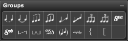

Palette Overview

Overture groups notes differently depending on the type of tool you selected. The following describes each of the tools in the Groups palette:
- Dotted Tie - Use this tool to create a dotted tie across two notes. Using this tool extends each note’s duration to the next note’s start time. This affects MIDI playback.
- Tie - Use this tool to tie together any notes of common pitch within a selected group. Using this tool is the same as grouping notes and choosing Notes>Group>Tie. MIDI playback recognizes tied notes and plays them properly.
- Dotted Slur. Use this tool to create a dotted slur across a selected group of notes. Using this tool extends each note’s duration to the next note’s start time. This affects MIDI playback
- Slur - Use this tool to create a slur across a selected group of notes. Using this tool is the same as grouping notes and choosing Notes>Group>Slur. Using this tool extends each note’s duration to the next note’s start time. This affects MIDI playback.
- Insert Straight Glissando - Use this tool to create a straight line glissando between two adjacent notes. Using this tool is the same as selecting two notes and choosing Notes>Group>Glissando -. Glissandos do not affect MIDI playback.
- Insert Wavy Glissando. Use this tool to create a wavy line glissando between two adjacent notes. Using this tool is the same as selecting two notes and choosing Notes>Group>Glissando ~. Glissandos do not affect MIDI playback.
- Group as New Tuplet - Use this tool to group selected notes into a tuplet of any kind. This tool produces a Tuplets dialog box in which you define the value, style, and characteristics of the tuplet. We discuss the Tuplets dialog box in Notes>Group>Tuplet. Using this tool is the same as grouping notes and choosing Notes>Group>Tuplet.
- Reapply Tuplet to Group. Use this tool to group selected notes into the type of tuplet last defined by the Tuplets dialog box. This tool makes it easy to apply common tuplet values quickly to many groups of notes.
- 8va - Select this type to insert an ottava sign over the selected notes. An 8va ottava sign indicates that notes under the sign are to be played one octave higher than written.
- 8vb - Select this type to insert an ottava sign under the selected notes. An 8vb ottava sign indicates that notes over the sign are to be played one octave lower than written.
- Full Pedal Sign. Use this tool to tell the pianist to press the damper pedal down at the beginning of the symbol and release it at the end. Move the pedal mark by putting the cursor over the symbol. The drag cursor appears. Drag the symbol start or end to the new location.
- Half Pedal Sign. Use this tool to instruct the pianist to press the damper pedal down at the beginning of the sign and release it halfway at the half pedal mark (the raised bump). Move the half pedal mark by placing the cursor over the mark (the drag cursor appears), and dragging it to the desired location. To add a new raised bump, Alt[option]-click along the horizontal line at the desired position. Ctrl[Cmd]-dragging the half pedal mark copies it to a new location.
- Pedal Mark Extended. Use this tool to tell the pianist to press the damper pedal down at the beginning of the symbol. The tool works like the Half Pedal Sign, except it adds a Pedal Sign symbol at the beginning of the horizontal line. To add a new raised bump, Alt[option]-click along the horizontal line at the desired position. Ctrl[Cmd]-dragging the pedal mark copies it to a new location.
- Parenthesized Notes Sign. Use this tool to enclose selected notes in parentheses.
- Harp Pedal Sign. Use this tool to enter and edit Salzedo Harp pedal positions. Once you place the harp pedal symbol, a dialog appears so you can set the pedal markings to different positions.
You can also double-click any harp pedal symbol to open the Harp Pedal Settings dialog box. See The Harp Pedal Settings Dialog Box.
- Brace Sign. Use this tool to group notes, lyric verses, etc.
- Bracket Sign. Use this tool to group notes where you have written some information about them. Brace Sign. Use this tool to group lyric verses.
For more information, see:
Using the Groups Palette
Ottavas